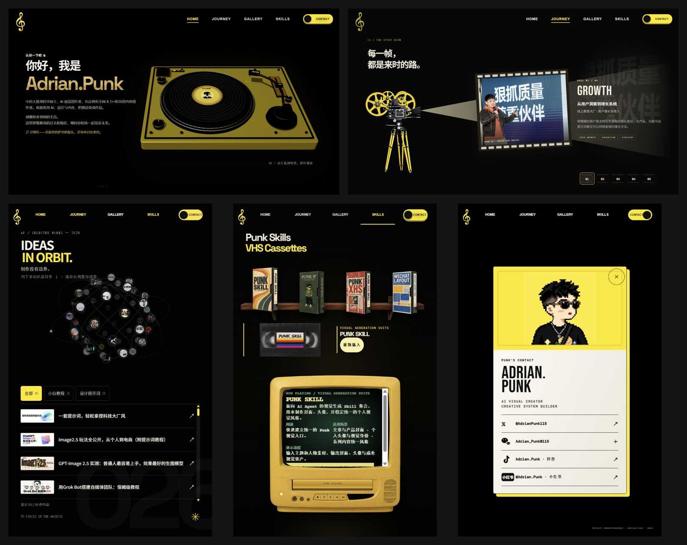

物品与故事有关联，整体风格统一。
唱片让人认识作者，放映机回看经历，星球展开文章世界，磁带在电视上展示产品，书信邀请联系。黑黄配色与复古媒介，让不同板块像同一个人的世界。
01 / 核心理解
个人主页的内容骨架是人物介绍、经历介绍、文章介绍、产品介绍、联系方式。唱片、放映机、轨道星球、磁带与电视机、书信，为这五类内容提供可参与、可记忆的表达方式。
唱片让人认识作者，放映机回看经历，星球展开文章世界，磁带在电视上展示产品，书信邀请联系。黑黄配色与复古媒介，让不同板块像同一个人的世界。
访客做一个动作，得到一层人物信息，再带着新的问题继续探索。定制时最需要自己完成的，是故事内容、物件含义和段落之间的关系。
看五类内容怎样对应物件 ↓
02 / 内容骨架 × 物件表达
| 个人主页内容 | 物件与动作 | 故事表达与访客收获 |
|---|---|---|
| 人物介绍 | 唱片 / 唱机：放入唱片 | 你是谁？把认识一个人设计成开始聆听一张唱片，让兴趣、气质与自我介绍一起出现。 |
| 经历介绍 | 放映机 / 胶片：切换片段 | 你怎样走到今天？像回看人生片段，依次理解关键经历、转折以及由此形成的能力。 |
| 文章介绍 | 轨道星球 / 目录：探索与选择 | 你如何思考？把文章组成可探索的内容世界；轨道营造联系感，目录帮助找到主题、观点与具体文章。 |
| 产品介绍 | 磁带 + 电视机：选择并插入 | 你创造了什么？每盘磁带承载一个产品，电视呈现用途与说明，再引导访问实际成果。 |
| 联系方式 | 书信 / 信封与名片：打开 | 怎样继续交流？从参观一个人的世界，过渡到建立联系，让结尾成为下一段交流的入口。 |
内容关系：认识你 → 理解你的经历 → 看到你的思考 → 了解你的成果 → 建立联系。这是我们提炼的阅读主线，访客也可以通过导航直接进入所需板块。
03 / 故事感怎样形成
准备经历、文章、产品和可公开资料。
这些材料共同说明怎样的你？
这个物件为什么属于这段故事？
让动作揭示内容，让视觉保持一致。
放唱片、点亮台灯、拆一封信：动作本身就传递人物气质，并引出一句值得继续了解的话。
“我是谁”引出“为何成为现在的我”；经历引出思考，思考引出作品，作品引出合作与联系。
统一颜色、字体、材质、空间与动作节奏；选取与人物有关联的物件，形成持续的识别感。
轨道星球的理解边界：已观察到文章探索与目录入口；轨道连接给人内容相互关联的感受，尚未验证每条轨道代表真实的文章语义关系。
点亮工作台、拆开一封信、连接探索星图是我们制作的创意演示；场景与第一人称文案用于说明方法，尚未替换为你自己的真实故事。
04 / 下一步规划
一句人物定位、几段关键经历、代表文章、代表产品、希望建立的联系。每段先写清楚要让访客记住什么。
得到：五类内容清单与可公开素材。按“遇到什么问题 → 做了什么选择 → 有何结果 → 形成什么能力 → 今天在做什么”整理事实，写出段落之间的承接句。
得到：一句话主线与五段故事提纲。从个人兴趣、工作环境与真实物品中寻找关联，逐项定义“内容—物件—动作—揭示信息”，再统一颜色、材质与动效节奏。
得到：物件映射表、开场脚本与风格方向。实现开头与五个板块，让文章、产品、联系方式都能直接访问；检查手机阅读、交互反馈与跳过动画后的内容完整性。
得到：内容真实、故事连贯、入口明确的个人主页。记住谁？
看完是否记得人物特点？
为什么是这件物品？
是否能解释它与故事的关系？
接下来去哪里？
能否继续阅读、使用产品或联系？
可复用的是内容组织、物件映射、交互编排与风格统一的方法。
需要自己构造的是人物故事，以及物件为什么与自己有关。
05 / 补充研究
文章需要封面，人物需要头像。
多篇文章使用同一个人物形象。
将长文整理成小红书知识卡片。
将长文排好，再复制到公众号。
把经常做的事情，整理成明确的输入、步骤、规则与结果。再用文章讲解方法，用主页汇总成果。
前三项主要在 AI Agent 中使用；微排提供直接操作的网页。选择形式，要看用户怎样完成任务更方便。
证据范围：前三项依据公开说明，未运行生成测试；微排已查看默认示例。XHS Cards 文档明确依赖 IP Illustrations；四项产品自动串联和商业收益尚未验证。